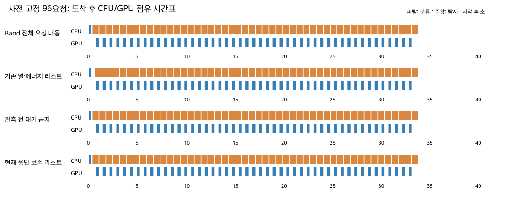
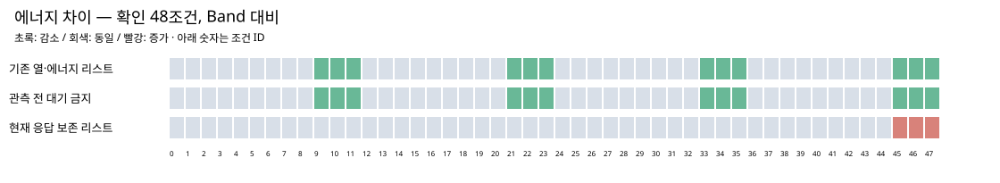
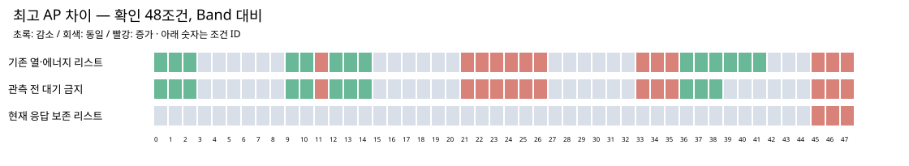
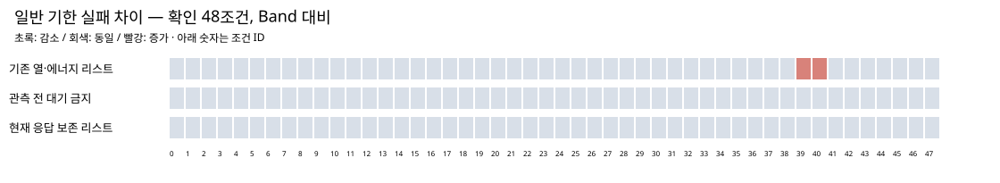

개발24 / 새 확인48 ×6정책. 사전고정96 교대 요청은 실제 기기 동결계획 검증용이며 온라인 기기 정책 실행이 아닙니다.
442/768 PC 환경 · 학습0 · 기기 명령0 · 요청 전량 완료. R1은 초기 미관측 냉각 금지, R2는 R1에 현재 큐 전체의 예상 응답 비악화를 추가합니다.
| 정책 | 완료/예정 | 긴급 실패 | 일반 실패 | 긴급 P95 평균 ms | ΔJ 평균 | Δ최고AP 평균 °C |
|---|---|---|---|---|---|---|
| Band 전체 요청 대응 | 3168/3168 | 0 | 40 | 352.354 | +0.000000 | +0.000000 |
| Triton 고정 요청 대응 | 3168/3168 | 0 | 40 | 386.822 | +0.478953 | +0.018656 |
| 서비스 우선 리스트 | 3168/3168 | 0 | 40 | 352.354 | +0.051831 | +0.002390 |
| 기존 열·에너지 리스트 | 3168/3168 | 0 | 42 | 352.354 | -0.075051 | -0.001776 |
| 관측 전 대기 금지 | 3168/3168 | 0 | 40 | 352.354 | -0.075051 | -0.001708 |
| 현재 응답 보존 리스트 | 3168/3168 | 0 | 40 | 352.354 | +0.002800 | +0.000089 |
| 정책 | 완료/예정 | 긴급 실패 | 일반 실패 | 긴급 P95 평균 ms | ΔJ 평균 | Δ최고AP 평균 °C |
|---|---|---|---|---|---|---|
| Band 전체 요청 대응 | 1584/1584 | 0 | 18 | 319.171 | +0.000000 | +0.000000 |
| Triton 고정 요청 대응 | 1584/1584 | 0 | 18 | 360.388 | +0.453512 | +0.018064 |
| 서비스 우선 리스트 | 1584/1584 | 0 | 18 | 319.171 | +0.039416 | +0.002078 |
| 기존 열·에너지 리스트 | 1584/1584 | 0 | 18 | 319.171 | -0.084759 | -0.000607 |
| 관측 전 대기 금지 | 1584/1584 | 0 | 18 | 319.171 | -0.084759 | -0.000680 |
| 현재 응답 보존 리스트 | 1584/1584 | 0 | 18 | 319.171 | +0.003869 | +0.000328 |
전체 평균을 최종 채택으로 해석하지 않습니다. 조건별 기한·P95·J·AP 비악화와 low/sustained 절대 기한 조건을 원 계약 그대로 평가했습니다.




AP는 동일 온도 모형 채널이며 표면 온도·안전 한도가 아닙니다. 작은 비용 차이를 휴대폰 실절감으로 확정할 수 없습니다. 4개 확인 도착 seed와 3개 문맥은 서로 다른 종류의 반복이며 48개 독립 실측이 아닙니다.